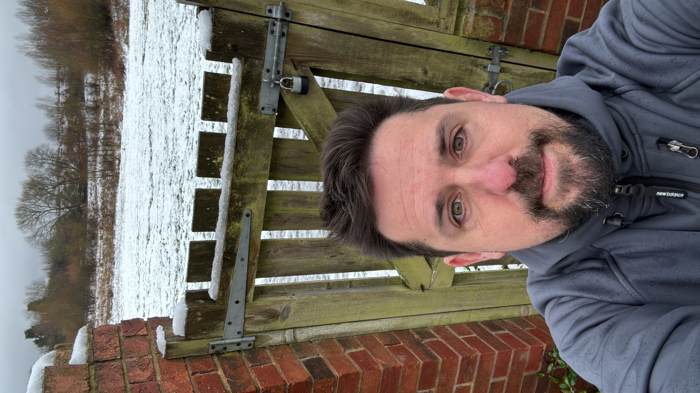

Photography
Small cameras, available light, streets, landscapes and the kind of pictures that are better because nobody noticed they were being taken.
CARLOS AGANZO
Software engineering leader focused on platforms, identity and distributed systems. Outside work: photography, long walks, travel, film, music and the occasional rabbit hole.

I like things that are built properly, whether they are software platforms, cameras, records, films, clothes or plans for getting from one place to another.
WORK
I work on the less glamorous parts of software that become very glamorous the moment they fail: identity, authentication, shared services, messaging and platform infrastructure.
My job is mostly about making complicated systems simpler, helping teams make good decisions, and being comfortable saying “I don’t know” before finding out.
OUTSIDE WORK
Small cameras, available light, streets, landscapes and the kind of pictures that are better because nobody noticed they were being taken.
Cities, long-distance walks and places that require a little more effort than arriving, photographing the obvious thing and leaving.
Too many films, too much music, and strong opinions about both. Melancholy is over-represented.
Objects with a story: cameras, records, cards and other things whose practical necessity is open to debate.
ABOUT
Spanish by origin, British by weather exposure. I have spent much of my adult life in the North East of England and still regard Madrid as home in a way that geography does not entirely explain.
This site is intentionally small. No analytics. No trackers. No newsletter popup.